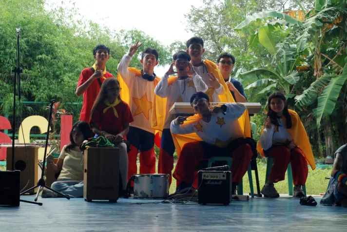
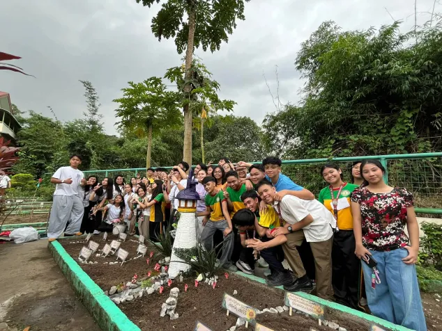
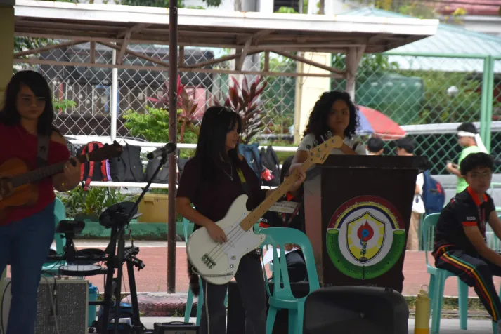
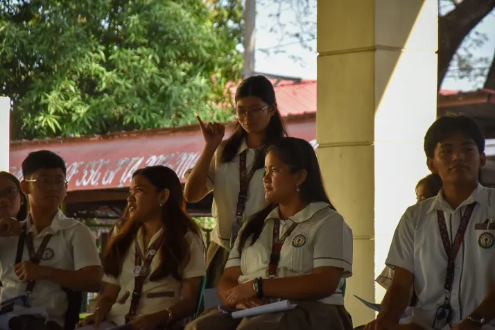
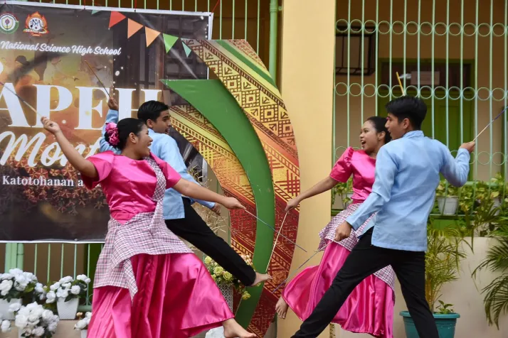
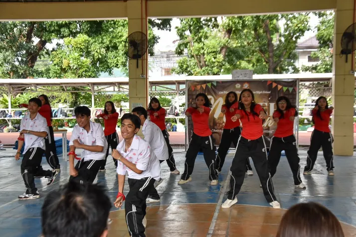

> [LOG]: these school events provided a necessary bridge between academic theory and social reality. while the classroom taught me the "how," these events taught me the "why"—why we collaborate, why culture matters, and why leadership is a responsibility. they weren't just breaks from lessons; they were lessons in themselves.
VPOP
This was the highlight of my month since it’s the event I actually poured my energy into. It wasn’t just about the singing or dancing; it was about how our class came together to represent our values.

Math Garden
The Math Garden was a unique way to take learning outside the four walls of the classroom. It proved that equations don't just belong on a chalkboard; they can be integrated into the real world.

Math Idol
Watching Math Idol was like seeing a completely different side of my schoolmates. The energy was high, and the creativity of the performers was impressive.

Miting De Avance
Attending the Miting de Avance was a reminder of our responsibility as students to choose the right leaders and engage in the school's democratic process.

Folk Dance
The Folk Dance competition was a beautiful tribute to our culture and heritage. The costumes and the music brought a sense of history to the event.

Street Dance
The Street Dance event was a total contrast—it was all about modern energy, power, and personality. proving that dance is a powerful universal language.
